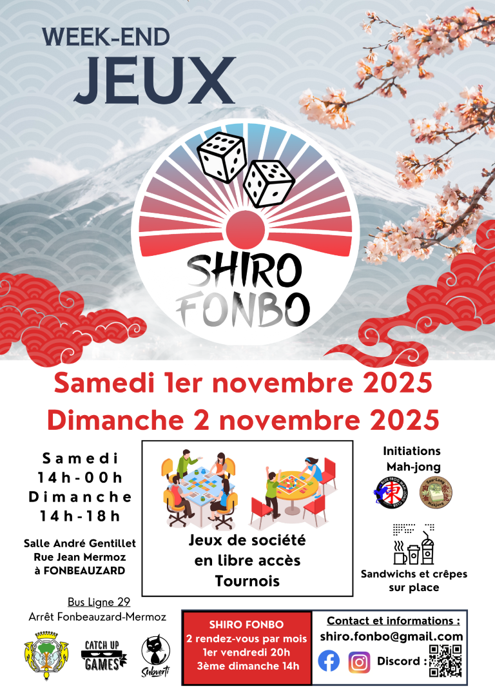

Initiation à Fonbeauzard
1-2 Novembre 2025
Sou-Long Mahjong sera présent à Fonbeauzard, dans le cadre du festival Shiro Fonbo !
Shiro Fonbo est une association de jeux de société, qui organise un festival libre d'accès le premier week-end de novembre.
Nous aurons une table d'initiation et nous proposerons des parties pédagogiques sur la durée du festival.
Nos amis du Blue Frog Mah-jong Club seront également présents pour proposer de l'initation.
Venez nous rencontrer et découvrir le mahjong !